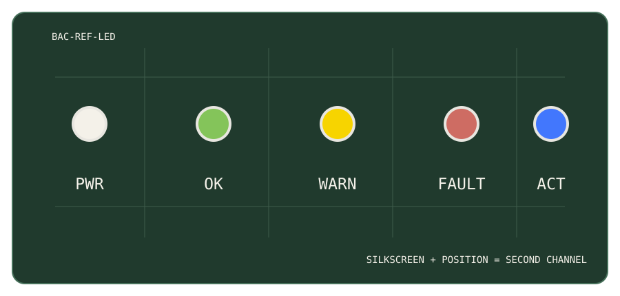

BAC reference exemplar · 06
Physical communication
Hardware is an interface too
The same semantic language should survive the boundary between screen, terminal and PCB. Colour helps, but position, typography and behaviour carry meaning too.
SEPARATE INDICATORS
Silkscreen identifies meaning

Use labels such as PWR, OK, WARN, FAULT, ACT, RX or TX. Prefer meaning over colour names: FAULT is more useful than RED.
Semantic continuity
POWER
white
NOMINAL
green
WARNING
yellow
FAULT
red
ACTIVITY
blue
Exact LED wavelength does not need to match a screen hex. Preserve semantic role, not RGB identity.
SHARED R/Y/G INDICATOR
A label alone is not enough
STATUS
Silkscreen tells you what the LED is, but not which state is active. If red/yellow/green share one package, add a dynamic second channel.
✓ Good: distinct temporal patterns where practical.
Good: repeat the state in a labelled display, log or terminal.
✗ Avoid: three steady colours with no other way to distinguish nominal, warning and fault.